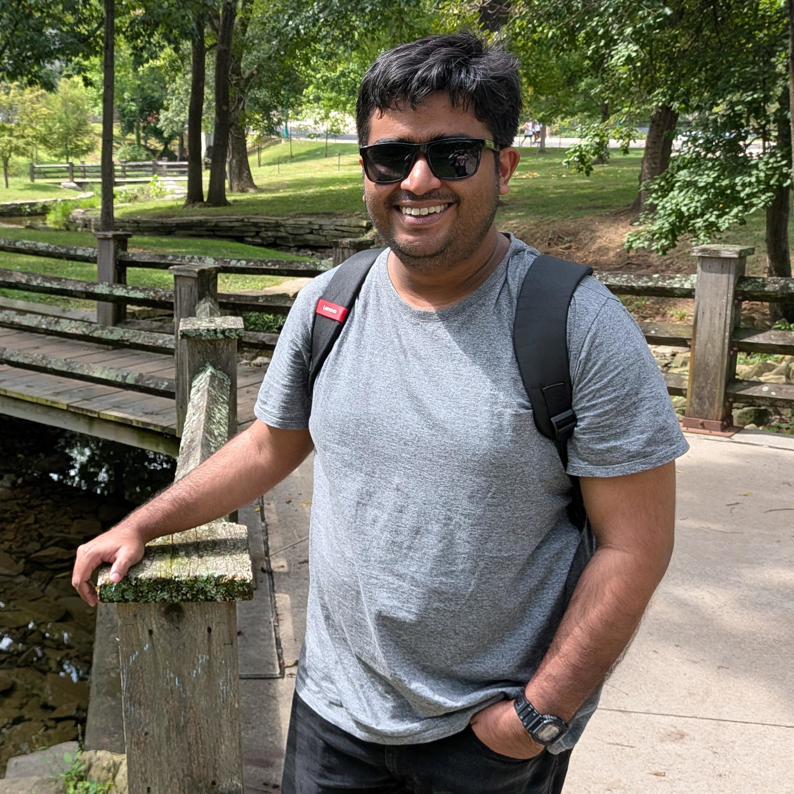

Ritajit Kundu
Postdoctoral researcher: theoretical condensed matter physics

I am a postdoctoral researcher at Indiana University Bloomington.
I completed my PhD in theoretical condensed matter physics at IIT Kanpur.
Research
I am interested in understanding exotic quantum matter and the collective phenomena that emerge in strongly interacting systems. My current research focuses on moiré physics, the fractional quantum Hall effect, and network models.
Datasets
Data and numerical results generated in connection with my research are openly available on Zenodo.
-
Data for “Sum rules and density-wave modes in spin-singlet fractional quantum Hall fluids”
Pair correlations, static structure factors, and density-wave modes for spin-polarized and spin-singlet fractional quantum Hall states.
Zenodo · 10.5281/zenodo.21885624 -
Data for “Relations between density-density correlators of states in the maximal spin multiplet”
Coulomb-energy data for several spin-polarized fractional quantum Hall states.
Zenodo · 10.5281/zenodo.21868489
Academic appointments
-
–present
Postdoctoral researcher, Indiana University Bloomington Mentor: Herb Fertig
-
–
Postdoctoral researcher, Institute of Mathematical Sciences Mentor: Ajit Balram
-
–
FARE Fellow, IIT Kanpur Mentor: Arijit Kundu